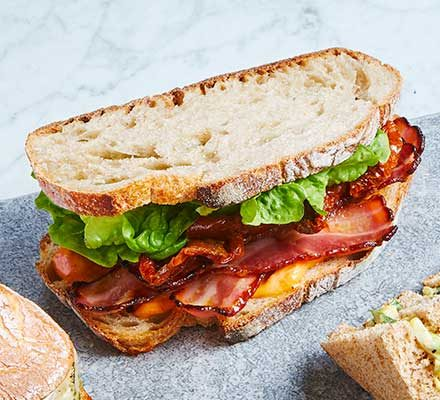

Best BLT

Simple sandwhich made with bacon, lettuce, and tomato.
Ingredients
- Fresh baked bread from bakery
- Heirloom tomatoes
- Applewood smoked bacon
- Leafy lettuce
- Mayonaise
- Butter
Steps
- Preheat oven to 350 F
- Line sheet tray with parchment paper
- Layer bacon on sheet tray, cook in oven for 10 minutes or until desired crispiness
- Slice and toast bread
- Butter bread and apply thin layer of mayonaise
- Layer tomatoes on bread, add salt and pepper
- Pat grease from bacon and place on tomatoes
- Add lettuce, and finally top peice of bread
- Slice, and enjoy
- (Optional)Serve with sweet potato fries